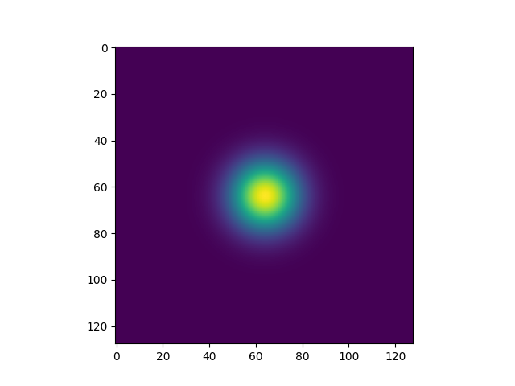
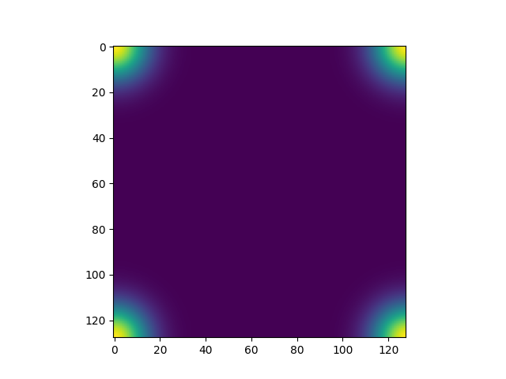
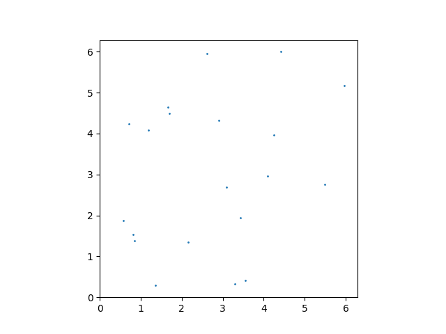
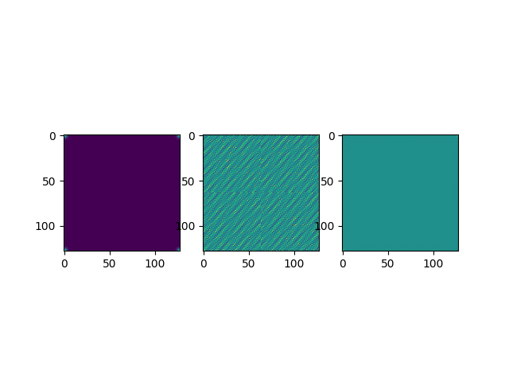
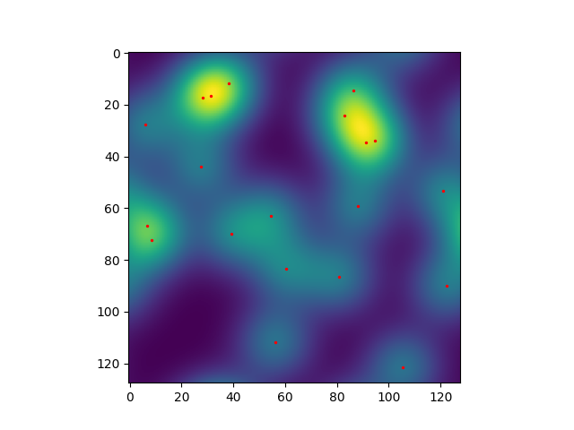
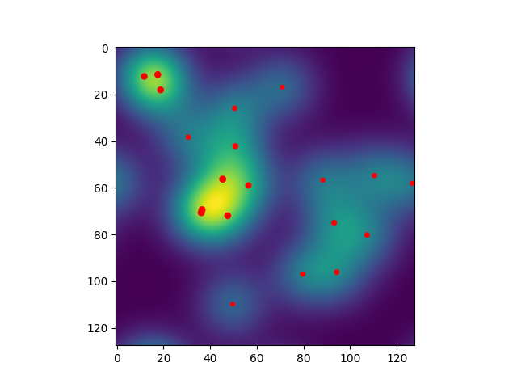
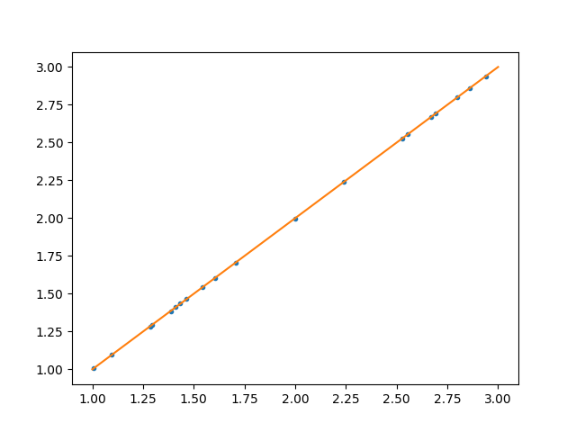
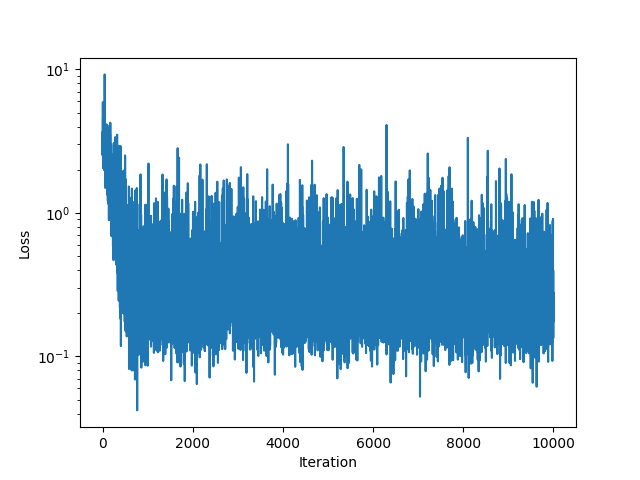
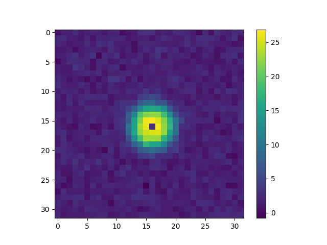

Note
Go to the end to download the full example code
Convolution in 2D#
Import packages#
First, we import the packages we need for this example.
import matplotlib.pyplot as plt
import numpy as np
import torch
import pytorch_finufft
Let’s create a Gaussian convolutional filter as a function of x,y
Let’s visualize this filter kernel. We will be using it to convolve with points living on the \([0, 2*\pi] \times [0, 2*\pi]\) torus. So let’s dimension it accordingly.
shape = (128, 128)
sigma = 0.5
x = np.linspace(-np.pi, np.pi, shape[0], endpoint=False)
y = np.linspace(-np.pi, np.pi, shape[1], endpoint=False)
gaussian_kernel = gaussian_function(x[:, np.newaxis], y, sigma=sigma)
fig, ax = plt.subplots()
_ = ax.imshow(gaussian_kernel)

In order for the kernel to not shift the signal, we need to place its mass at 0. To do this, we ifftshift the kernel
shifted_gaussian_kernel = np.fft.ifftshift(gaussian_kernel)
fig, ax = plt.subplots()
_ = ax.imshow(shifted_gaussian_kernel)

Now let’s create a point cloud on the torus that we can convolve with our filter

Now we can convolve the point cloud with the filter kernel. To do this, we Fourier-transform both the point cloud and the filter kernel, multiply them together, and then inverse Fourier-transform the result. First we need to convert all data to torch tensors
fourier_shifted_gaussian_kernel = torch.fft.fft2(
torch.from_numpy(shifted_gaussian_kernel)
)
fourier_points = pytorch_finufft.functional.finufft_type1(
torch.from_numpy(points), torch.ones(points.shape[1], dtype=torch.complex128), shape
)
fig, axs = plt.subplots(1, 3)
axs[0].imshow(fourier_shifted_gaussian_kernel.real)
axs[1].imshow(fourier_points.real, vmin=-10, vmax=10)
_ = axs[2].imshow(
(
fourier_points
* fourier_shifted_gaussian_kernel
/ fourier_shifted_gaussian_kernel[0, 0]
).real,
vmin=-10,
vmax=10,
)

We now have two possibilities: Invert the Fourier transform on a grid, or on a point cloud. We’ll first invert the Fourier transform on a grid in order to be able to visualize the effect of the convolution.
convolved_points = torch.fft.ifft2(fourier_points * fourier_shifted_gaussian_kernel)
fig, ax = plt.subplots()
ax.imshow(convolved_points.real)
_ = ax.scatter(
points[1] / 2 / np.pi * shape[0], points[0] / 2 / np.pi * shape[1], s=2, c="r"
)

We see that the convolution has smeared out the point cloud. After a small coordinate change, we can also plot the original points on the same plot as the convolved points.
Next, we invert the Fourier transform on the same points as our original point cloud. We will then compare this to direct evaluation of the kernel on all pairwise difference vectors between the points.
convolved_at_points = pytorch_finufft.functional.finufft_type2(
torch.from_numpy(points),
fourier_points * fourier_shifted_gaussian_kernel,
isign=1,
).real / np.prod(shape)
fig, ax = plt.subplots()
ax.imshow(convolved_points.real)
_ = ax.scatter(
points[1] / 2 / np.pi * shape[0],
points[0] / 2 / np.pi * shape[1],
s=10 * convolved_at_points,
c="r",
)

To compute the convolution directly, we need to evaluate the kernel on all pairwise difference vectors between the points. Note the points that will be off the diagonal. These will be due to the periodic boundary conditions of the convolution.
pairwise_diffs = points[:, np.newaxis] - points[:, :, np.newaxis]
kernel_diff_evals = gaussian_function(*pairwise_diffs, sigma=sigma)
convolved_by_hand = kernel_diff_evals.sum(1)
fig, ax = plt.subplots()
ax.plot(convolved_at_points.numpy(), convolved_by_hand, ".")
ax.plot([1, 3], [1, 3])
relative_difference = torch.norm(
convolved_at_points - convolved_by_hand
) / np.linalg.norm(convolved_by_hand)
print(
"Relative difference between fourier convolution and direct convolution "
f"{relative_difference}"
)

Relative difference between fourier convolution and direct convolution 0.0003003377463575345
Now let’s see if we can learn the convolution kernel from the input and output point clouds. To this end, let’s first make a pytorch object that can compute a kernel convolution on a point cloud.
class FourierPointConvolution(torch.nn.Module):
def __init__(self, fourier_kernel_shape):
super().__init__()
self.fourier_kernel_shape = fourier_kernel_shape
self.build()
def build(self):
self.register_parameter(
"fourier_kernel",
torch.nn.Parameter(
torch.randn(self.fourier_kernel_shape, dtype=torch.complex128)
),
)
# ^ think about whether we need to scale this init in some better way
def forward(self, points, values):
fourier_transformed_input = pytorch_finufft.functional.finufft_type1(
points, values, self.fourier_kernel_shape
)
fourier_convolved = fourier_transformed_input * self.fourier_kernel
convolved = pytorch_finufft.functional.finufft_type2(
points,
fourier_convolved,
isign=1,
).real / np.prod(self.fourier_kernel_shape)
return convolved
Now we can use this object in a pytorch training loop to learn the kernel from the input and output point clouds. We will use the mean squared error as a loss function.
fourier_point_convolution = FourierPointConvolution(shape)
optimizer = torch.optim.AdamW(
fourier_point_convolution.parameters(), lr=0.005, weight_decay=0.001
)
ones = torch.ones(points.shape[1], dtype=torch.complex128)
losses = []
for i in range(10000):
# Make new set of points and compute forward model
points = np.random.rand(2, N) * 2 * np.pi
torch_points = torch.from_numpy(points)
fourier_points = pytorch_finufft.functional.finufft_type1(
torch.from_numpy(points), ones, shape
)
convolved_at_points = pytorch_finufft.functional.finufft_type2(
torch.from_numpy(points),
fourier_points * fourier_shifted_gaussian_kernel,
isign=1,
).real / np.prod(shape)
# Learning step
optimizer.zero_grad()
convolved = fourier_point_convolution(torch_points, ones)
loss = torch.nn.functional.mse_loss(convolved, convolved_at_points)
losses.append(loss.item())
loss.backward()
optimizer.step()
if i % 100 == 0:
print(f"Iteration {i:05d}, Loss: {loss.item():1.4f}")
fig, ax = plt.subplots()
ax.plot(losses)
ax.set_ylabel("Loss")
ax.set_xlabel("Iteration")
ax.set_yscale("log")
fig, ax = plt.subplots()
im = ax.imshow(
torch.real(torch.fft.fftshift(fourier_point_convolution.fourier_kernel.data))[
48:80, 48:80
]
)
_ = fig.colorbar(im, ax=ax)


Iteration 00000, Loss: 3.8765
Iteration 00100, Loss: 2.4772
Iteration 00200, Loss: 2.0417
Iteration 00300, Loss: 0.8810
Iteration 00400, Loss: 0.5688
Iteration 00500, Loss: 0.8416
Iteration 00600, Loss: 0.3746
Iteration 00700, Loss: 1.0174
Iteration 00800, Loss: 0.1227
Iteration 00900, Loss: 0.2703
Iteration 01000, Loss: 0.3289
Iteration 01100, Loss: 0.4200
Iteration 01200, Loss: 0.4950
Iteration 01300, Loss: 0.3545
Iteration 01400, Loss: 0.3941
Iteration 01500, Loss: 0.2510
Iteration 01600, Loss: 0.1553
Iteration 01700, Loss: 0.2193
Iteration 01800, Loss: 0.2308
Iteration 01900, Loss: 0.1638
Iteration 02000, Loss: 0.4187
Iteration 02100, Loss: 0.4461
Iteration 02200, Loss: 0.2067
Iteration 02300, Loss: 0.1626
Iteration 02400, Loss: 0.2965
Iteration 02500, Loss: 0.1683
Iteration 02600, Loss: 0.2663
Iteration 02700, Loss: 0.2689
Iteration 02800, Loss: 0.5102
Iteration 02900, Loss: 0.2305
Iteration 03000, Loss: 0.2129
Iteration 03100, Loss: 0.2860
Iteration 03200, Loss: 0.3150
Iteration 03300, Loss: 0.1633
Iteration 03400, Loss: 0.2905
Iteration 03500, Loss: 0.3093
Iteration 03600, Loss: 0.1031
Iteration 03700, Loss: 0.2404
Iteration 03800, Loss: 0.2600
Iteration 03900, Loss: 0.2041
Iteration 04000, Loss: 0.1579
Iteration 04100, Loss: 0.4464
Iteration 04200, Loss: 0.1992
Iteration 04300, Loss: 1.0341
Iteration 04400, Loss: 0.6934
Iteration 04500, Loss: 0.3855
Iteration 04600, Loss: 0.7016
Iteration 04700, Loss: 0.2862
Iteration 04800, Loss: 0.1696
Iteration 04900, Loss: 0.3060
Iteration 05000, Loss: 0.2524
Iteration 05100, Loss: 0.5902
Iteration 05200, Loss: 0.1088
Iteration 05300, Loss: 0.4058
Iteration 05400, Loss: 0.7002
Iteration 05500, Loss: 0.8418
Iteration 05600, Loss: 0.2391
Iteration 05700, Loss: 0.1456
Iteration 05800, Loss: 0.2043
Iteration 05900, Loss: 0.2513
Iteration 06000, Loss: 0.2041
Iteration 06100, Loss: 0.1360
Iteration 06200, Loss: 0.2503
Iteration 06300, Loss: 0.2031
Iteration 06400, Loss: 0.6083
Iteration 06500, Loss: 0.1229
Iteration 06600, Loss: 0.4454
Iteration 06700, Loss: 0.3305
Iteration 06800, Loss: 0.1787
Iteration 06900, Loss: 0.6726
Iteration 07000, Loss: 0.1990
Iteration 07100, Loss: 0.2763
Iteration 07200, Loss: 0.2087
Iteration 07300, Loss: 0.9927
Iteration 07400, Loss: 0.3795
Iteration 07500, Loss: 0.3007
Iteration 07600, Loss: 0.2022
Iteration 07700, Loss: 0.1350
Iteration 07800, Loss: 0.1620
Iteration 07900, Loss: 0.7272
Iteration 08000, Loss: 0.2035
Iteration 08100, Loss: 0.4612
Iteration 08200, Loss: 0.3332
Iteration 08300, Loss: 0.3004
Iteration 08400, Loss: 0.2528
Iteration 08500, Loss: 0.4037
Iteration 08600, Loss: 0.6360
Iteration 08700, Loss: 0.2722
Iteration 08800, Loss: 0.4921
Iteration 08900, Loss: 0.2343
Iteration 09000, Loss: 0.3993
Iteration 09100, Loss: 0.2311
Iteration 09200, Loss: 0.3349
Iteration 09300, Loss: 0.2574
Iteration 09400, Loss: 0.0795
Iteration 09500, Loss: 0.2872
Iteration 09600, Loss: 0.3024
Iteration 09700, Loss: 0.2264
Iteration 09800, Loss: 0.2445
Iteration 09900, Loss: 0.1427
Total running time of the script: (1 minutes 13.562 seconds)